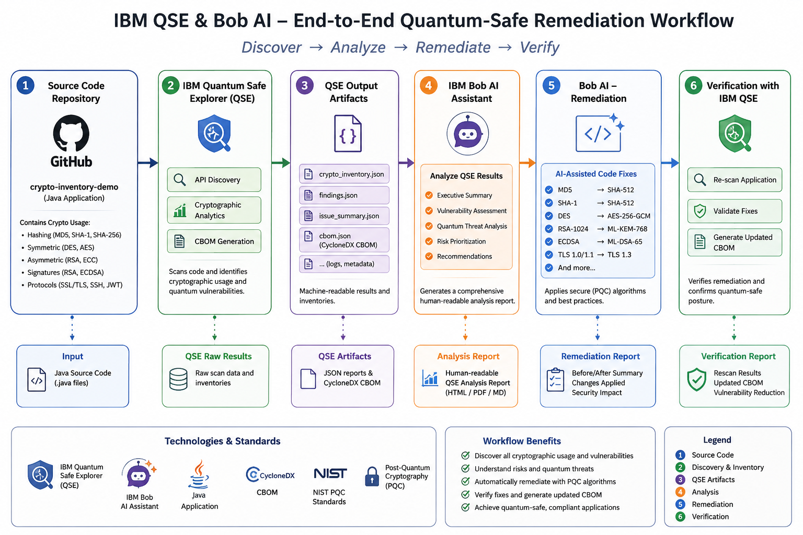

Quantum-Safe¶
Overview¶
As quantum computing advances, the cryptographic algorithms that protect today's software may no longer be secure. IBM Quantum Safe Explorer gives organizations a head start by automatically discovering every cryptographic asset in their codebase — before a vulnerability becomes a breach.
What is Quantum Safe Explorer?¶
IBM Quantum Safe Explorer scans application source code and binaries to surface cryptographic assets, identify weak or quantum-vulnerable algorithms, and generate a Cryptography Bill of Materials (CBOM) in standardized CycloneDX JSON format. It gives security teams and developers a clear, auditable picture of where cryptography lives across their software — and what needs to change.
Built for technology leaders — VPs of Products, CISOs, and DevSecOps teams — it is especially valuable for organizations in regulated or data-sensitive industries: SaaS providers, database vendors, CRM and ERP platforms, HR systems, and AI/ML companies. Whether the goal is audit readiness, regulatory compliance, or long-term post-quantum preparedness, Quantum Safe Explorer provides the visibility to act with confidence.
IBM has validated this approach internally through its "Client Zero" initiative, accelerating crypto-agility across its own product portfolio. Learn more: Empowering CIOs to Accelerate Crypto-Agility with IBM Quantum Safe Explorer
Why Quantum Safe Explorer?¶
- Continuous Cryptographic Inventory: Always know exactly what cryptography is deployed across your applications and infrastructure.
- Automatic CBOM Generation: Produce a Cryptography Bill of Materials with every build — no manual tracking required.
- Early Detection of Weak Algorithms: Find vulnerable or deprecated cryptographic implementations before they reach production.
- AI-Assisted Remediation: Pair with IBM BOB Building Blocks to automatically generate code fixes, pull requests, and migration guides.
Key Features¶
Core Capabilities¶
🎯 Cryptographic Discovery & Scanning
Source Code & Binary Scanning: IBM Quantum Safe Explorer performs deep scanning of application source code and compiled binaries to surface all cryptographic usage across a codebase.
- Encryption Algorithm Detection: Identifies RSA, ECC, AES, SHA, and other algorithms in use
- Key Size & Mode Analysis: Reports key sizes, cipher modes, and protocol versions
- Library & Certificate Discovery: Enumerates cryptographic libraries (e.g., OpenSSL, BouncyCastle), X.509 certificates, and TLS protocols
Use Case: A development team wants to audit all cryptographic dependencies before a major release to ensure no weak algorithms are present.
⚡ CBOM Generation & Reporting
Cryptography Bill of Materials (CBOM): Every scan automatically produces a structured CBOM in JSON format, providing a standardized inventory of cryptographic assets aligned with the CycloneDX standard.
- findings.json: Detailed discovery results per file and line
- CSV Reports: Tabular summaries for security teams and auditors
- CBOM.json: Machine-readable CycloneDX-compliant cryptographic inventory
Use Case: A CISO needs a compliance artifact listing every algorithm, key size, and certificate in a product's codebase to satisfy a regulatory audit.
🔒 CI/CD Pipeline Integration & Remediation
Continuous Scanning in Pipelines: Integrate IBM Quantum Safe Explorer directly into CI/CD workflows (GitHub Actions, Jenkins, Tekton, Azure DevOps) so every code push is automatically scanned.
- Automated Vulnerability Detection: Flags quantum-vulnerable algorithms (e.g., RSA-1024, SHA-1, TLS 1.0) as pipeline quality gates
- IBM BOB Integration: Feeds CBOM findings into IBM BOB for AI-generated code remediation and pull requests
- Post-Quantum Migration Paths: Recommends NIST PQC algorithms (ML-KEM / Kyber, ML-DSA / Dilithium) as migration targets
Use Case: A DevSecOps team wants broken-crypto findings to automatically trigger AI-generated fix PRs without manual developer intervention.
Architecture¶
High-Level Architecture¶

System Components¶
| Component | Purpose | Technology | Scalability |
|---|---|---|---|
| CI/CD Pipeline | Trigger scans on every push | GitHub Actions / Jenkins / Tekton | Horizontal |
| Quantum Safe Explorer | Crypto discovery and CBOM generation | IBM QSE Scanner | Horizontal |
| CBOM Store | Persist cryptographic inventories | JSON / CycloneDX | Vertical/Horizontal |
| IBM BOB | AI-assisted code remediation and PR generation | IBM BOB Building Blocks | Horizontal |
| Version Control | Track remediation history and approvals | GitHub / GitLab | Horizontal |
Data Flow¶
sequenceDiagram
participant Developer
participant CI/CD
participant Explorer
participant BOB
participant VCS
Developer->>VCS: Git Push
VCS->>CI/CD: Trigger Pipeline
CI/CD->>Explorer: Run Scan (source + binaries)
Explorer-->>CI/CD: findings.json, CBOM.json, CSV
CI/CD->>BOB: Feed CBOM + findings
BOB->>BOB: Analyse vulnerable algorithms
BOB-->>VCS: Create remediation Pull Request
VCS-->>Developer: Review & Approve PR
Developer->>CI/CD: Merge triggers re-scan
Explorer-->>CI/CD: Updated CBOM (quantum-ready)Use Cases¶
Who Should Use Quantum Safe Explorer?¶
Target Personas¶
👨💻 Developers & DevSecOps Engineers
Quantum Safe Explorer integrates directly into developer workflows, surfacing cryptographic findings during normal CI/CD execution and pairing with IBM BOB to generate ready-to-review fix PRs.
Common Tasks:
- Run automated crypto scans on every pull request
- Review IBM BOB-generated remediation suggestions
- Validate fixes by re-scanning after merging changes
Benefits:
- No context switching — findings and fixes surface inside existing pipelines
- AI-generated PRs reduce manual remediation effort
🏢 Enterprise Security & Compliance Teams (CISOs)
Security executives use Quantum Safe Explorer to gain organization-wide visibility into cryptographic posture and demonstrate compliance readiness for post-quantum mandates.
Common Tasks:
- Generate CBOMs across the product portfolio for audit submissions
- Track cryptographic risk trends over time via scan histories
- Enforce quantum-readiness gates in enterprise CI/CD standards
Benefits:
- Standardized CycloneDX CBOM output accepted by compliance frameworks
- Continuous monitoring replaces point-in-time manual audits
🎯 VP of Products & Technology Leaders
Product leaders leverage Quantum Safe Explorer to ensure their software products remain competitive and secure as quantum computing advances, backed by IBM's own Client Zero experience.
Common Tasks:
- Assess overall quantum vulnerability exposure across product lines
- Prioritize engineering investment in cryptographic modernization
- Communicate crypto-agility progress to customers and regulators
Benefits:
- Clear risk dashboards from CBOM data support executive decision-making
- IBM Client Zero validation provides proven enterprise-scale reference
Real-World Scenarios¶
Scenario 1: Automated Cryptographic Remediation in CI/CD¶
Challenge: A SaaS provider needs to identify and fix weak cryptographic algorithms (RSA-1024, SHA-1, TLS 1.0) across a large Java codebase before an upcoming SOC 2 audit, but manual code review at scale is impractical.
Solution: Integrate IBM Quantum Safe Explorer into the CI/CD pipeline to scan every build, generate a CBOM, and feed findings into IBM BOB for automated fix generation and pull request creation.
Implementation:
# GitHub Actions workflow excerpt
- name: Run Quantum Safe Explorer
run: |
qse scan --source ./src --output ./reports
# Outputs: findings.json, CBOM.json, report.csv
- name: Feed CBOM to IBM BOB
run: |
bob remediate --cbom ./reports/CBOM.json --create-pr
Results: - ✅ Scan coverage: 100% of source code scanned on every push - ✅ Remediation speed: AI-generated PRs reduce fix time from days to hours - ✅ Audit readiness: CycloneDX CBOM available for every build artifact
Scenario 2: Post-Quantum Migration Planning¶
Challenge: An enterprise preparing for NIST post-quantum cryptography (PQC) mandates needs to understand which applications use quantum-vulnerable algorithms and plan a phased migration roadmap.
Solution: Use IBM Quantum Safe Explorer to produce a portfolio-wide CBOM, identify all quantum-vulnerable algorithms, and leverage IBM BOB to generate migration guides targeting ML-KEM (Kyber) and ML-DSA (Dilithium).
Benefits: - Clear inventory of every vulnerable algorithm across all products - Prioritized migration roadmap based on risk ratings from scan findings - IBM BOB suggests NIST PQC replacement APIs, reducing migration complexity
Products & Services¶
IBM Quantum Safe Explorer¶
Description: The core scanning engine that discovers cryptographic assets in source code and binaries, generating CBOMs and vulnerability reports to help organizations understand their cryptographic posture.
Key Features: - Deep source code and binary scanning for cryptographic assets - Automatic CBOM generation in CycloneDX JSON format - Identification of quantum-vulnerable algorithms and risk ratings
Links: - 📖 Implementation Guide - 🌐 IBM Quantum Safe
CBOMkit¶
Description: An open-source toolkit contributed by IBM to the Post-Quantum Cryptography Alliance (PQCA) under the Linux Foundation, enabling cryptographic inventory generation, visualization, analysis, and storage based on the CycloneDX CBOM standard.
Key Features: - CBOM generation, visualization, and storage - Open-source and community-driven under the Linux Foundation / PQCA - Integrates with IBM Quantum Safe Explorer output
Links: - 💻 CBOMkit on GitHub (PQCA) - 📖 CycloneDX CBOM Specification
IBM BOB (Building Blocks)¶
Description: IBM's AI-assisted engineering platform that ingests CBOM findings from IBM Quantum Safe Explorer and automatically generates code remediation suggestions, replacement APIs, migration guides, and pull requests to accelerate cryptographic modernization.
Key Features: - Reads CBOM and understands vulnerable cryptographic locations in code - Generates pull requests with specific algorithm replacement code - Produces migration guides for post-quantum algorithm transitions
Links: - 📖 Quantum-Safe Integration Guide
Core Concepts¶
Fundamental Concepts¶
Concept 1: Cryptography Bill of Materials (CBOM)¶
A Cryptography Bill of Materials (CBOM) provides a standardized inventory of the cryptographic assets used within software and systems, including algorithms, keys, certificates, protocols, and their configurations. As a core capability of the CycloneDX standard, CBOM gives organizations visibility into how and where cryptography is deployed across their environments.
Key Points: - Enables identification of vulnerable or deprecated cryptographic components - Supports compliance requirements and security governance - Plays a critical role in assessing and planning the transition to post-quantum cryptography
CBOM Contents:
| Information | Example |
|---|---|
| Algorithms | RSA-2048, AES-256, SHA-1 |
| Libraries | OpenSSL, BouncyCastle |
| Protocols | TLS 1.2 |
| Certificates | X.509 certificates |
| Key sizes | 1024-bit, 2048-bit |
| Dependencies | Which components use which crypto |
Example CBOM finding:
{
"algorithm": "RSA",
"key_size": 1024,
"location": "auth-service.java:120",
"risk": "High"
}
Concept 2: IBM's Leadership in CBOM Standardization¶
IBM Research has been instrumental in defining the CycloneDX CBOM specification and driving its industry adoption. In 2024, IBM open-sourced CBOMkit, a powerful toolkit for cryptographic inventory generation, visualization, analysis, and storage. IBM subsequently contributed these capabilities to the Post-Quantum Cryptography Alliance (PQCA) under the Linux Foundation to advance industry collaboration.
Visual Representation:
IBM Research → CycloneDX CBOM Spec → Industry Standard
↓
IBM Quantum Safe Explorer
↓
CBOMkit (open-source)
↓
Post-Quantum Cryptography Alliance (PQCA)
↓
Community Adoption & Contribution
Concept 3: Quantum-Vulnerable Algorithms & NIST PQC¶
Certain widely-used cryptographic algorithms (RSA, ECC, Diffie-Hellman) are considered quantum-vulnerable because sufficiently powerful quantum computers could break them. NIST has standardized post-quantum cryptographic (PQC) algorithms as replacements:
- ML-KEM (Kyber) — Key encapsulation mechanism replacement
- ML-DSA (Dilithium) — Digital signature replacement
How It Works¶
┌──────────────────────┐
│ Developer Code Push │
└──────────┬───────────┘
│
↓
┌──────────────────────┐
│ CI/CD Pipeline │
│ Build + Tests │
└──────────┬───────────┘
│
↓
┌──────────────────────┐
│ QSE Scan │
│ findings.json │
│ CBOM.json │
└──────────┬───────────┘
│
↓
┌──────────────────────┐
│ IBM BOB │
│ Read CBOM │
│ Generate Fix PR │
└──────────┬───────────┘
│
↓
┌──────────────────────┐
│ Developer Approves │
│ Re-scan confirms │
│ Quantum-Ready App │
└──────────────────────┘
Assets¶
Download Skills¶
| Skill Name | Description | Download Link |
|---|---|---|
| Quantum Safe Skills | Pre-built skills for IBM Quantum Safe Explorer integration with IBM BOB | 📥 Download |
Download Custom Modes¶
| Mode Name | Description | Download Link |
|---|---|---|
| Quantum Safe Mode | Custom BOB mode tailored for quantum-safe cryptographic scanning and remediation workflows | 📥 Download |
Demo Videos¶
Explore our video library to see Quantum Safe Explorer in action:
Getting Started Videos¶
| Video Title | Description | Link |
|---|---|---|
| Introduction to IBM Quantum Safe Explorer | Overview of key features, CBOM generation, and CI/CD integration | ▶️ Watch on YouTube |
Video Playlists¶
- 📺 IBM Quantum Safe YouTube Playlist — IBM Technology channel for latest quantum-safe content
Additional Resources¶
- 🌐 IBM Quantum Safe — Official IBM Quantum Safe product page
- 📖 IBM Client Zero Blog — Empowering CIOs to Accelerate Crypto-Agility
- 💻 CBOMkit (PQCA) — Open-source CBOM toolkit
How to Get Started¶
Quick Start Path¶
Follow this recommended onboarding flow:
- Understand the purpose
- Read the Overview section to understand the quantum cryptography problem this Building Block solves.
-
Review the Key Features section to identify the most relevant scanning and remediation capabilities.
-
Identify your use case
- Use the Use Cases section to map the tool to your role — developer, CISO, or VP of Products.
-
Review the CI/CD integration scenario or the post-quantum migration planning scenario that best matches your needs.
-
Review architecture and concepts
- Explore the Architecture section to understand how Quantum Safe Explorer, CBOM output, and IBM BOB connect.
-
Read the Core Concepts section to understand CBOM, quantum-vulnerable algorithms, and NIST PQC standards.
-
Choose supporting products and services
- Use the Products & Services section to determine which IBM products are required (IBM Quantum Safe Explorer, CBOMkit, IBM BOB).
-
Note any prerequisites: access to IBM Quantum Safe Explorer, a CI/CD platform, and an IBM BOB environment.
-
Review the implementation guide
- Proceed to the complete implementation guide for detailed setup instructions.
Recommended Prerequisites¶
- Access requirements: IBM Quantum Safe Explorer license, IBM BOB environment, GitHub/GitLab account
- Environment requirements: CI/CD platform (GitHub Actions, Jenkins, Tekton, or Azure DevOps)
- Technical prerequisites: Java or other supported language codebase, familiarity with CI/CD pipeline configuration
- Knowledge prerequisites: Basic understanding of cryptographic concepts (algorithms, key sizes, TLS), familiarity with CBOM/CycloneDX standard
First Success Checklist¶
- [ ] Access to IBM Quantum Safe Explorer is confirmed
- [ ] CI/CD pipeline is configured to run Explorer on code push
- [ ] A CBOM is successfully generated from a sample scan
- [ ] IBM BOB is connected and can read CBOM findings
- [ ] A remediation pull request has been generated and reviewed
- [ ] Re-scan confirms cryptographic improvements
Best Practices¶
- Integrate Explorer Early — Add IBM Quantum Safe Explorer to CI/CD pipelines from the start of a project
- Automate CBOM Generation — Generate CBOMs automatically with every build for continuous visibility
- Start with Risk Assessment — Use Explorer to evaluate quantum vulnerability of existing cryptographic implementations before planning remediation
- Leverage AI Remediation — Use IBM BOB to automatically generate fixes for vulnerable cryptography
- Continuous Scanning — Re-scan applications after remediation to verify fixes and update the CBOM
- Maintain Audit Trails — Keep records of all cryptographic changes and remediations for compliance
- Prioritize High-Risk Findings — Address critical vulnerabilities (RSA-1024, SHA-1, TLS 1.0) first
- Test Thoroughly — Validate all cryptographic changes in non-production environments before deploying
- Plan for Post-Quantum — Prepare migration paths to NIST PQC algorithms (ML-KEM, ML-DSA) proactively
Additional Resources¶
Related Building Blocks¶
Within Secure:
- Non-human Identity — Identity and access management
Other Building Blocks:
- Infrastructure as Code — Automated infrastructure provisioning
- iPaaS — Integration platform capabilities
- Code Modernization — Modernize security middleware
- Automated Resilience & Compliance — Ensure cryptographic compliance
External Links¶
- IBM Quantum Safe
- CycloneDX CBOM Specification
- NIST Post-Quantum Cryptography Standards
- Post-Quantum Cryptography Alliance (PQCA)
- CBOMkit on GitHub
Call to Action¶
Ready to Build with Quantum Safe?¶
Take the next step with this Building Block by choosing the path that best fits your needs:
- Explore the fundamentals in the Overview, Architecture, and Core Concepts sections
- Follow a hands-on path in How to Get Started
- Review the complete implementation guide on GitHub
- Watch the demo to see Quantum Safe Explorer and IBM BOB in action
Quick links:
- 🚀 Complete Implementation Guide
- ▶️ Watch Demo on YouTube
- 🌐 IBM Quantum Safe
- 📖 CycloneDX CBOM Standard